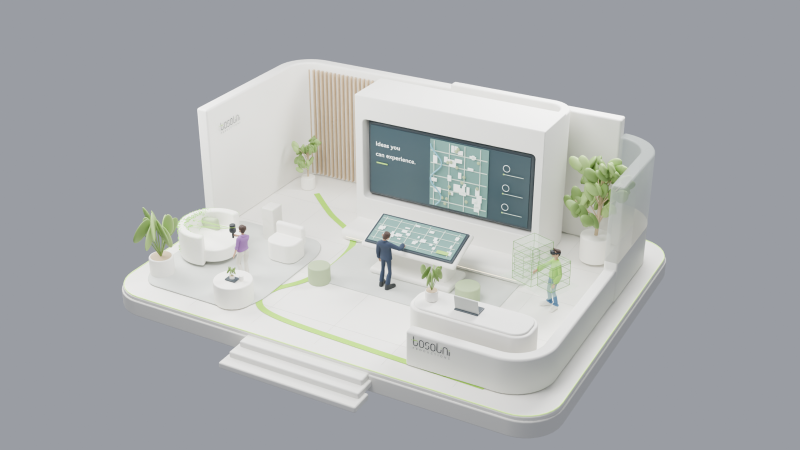
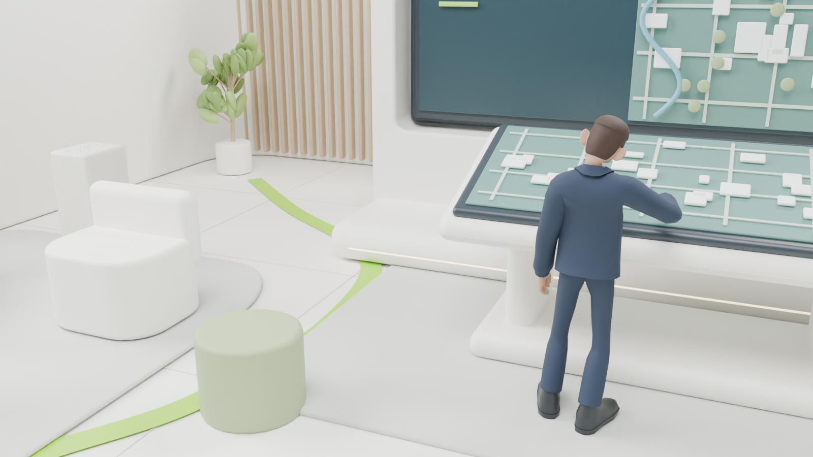
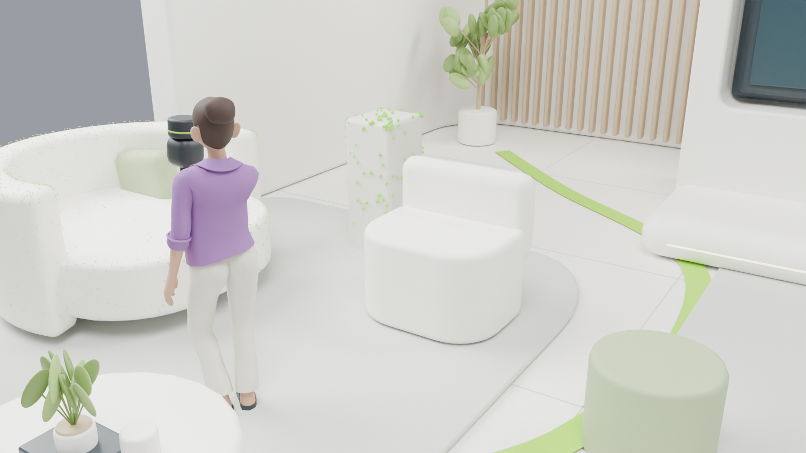
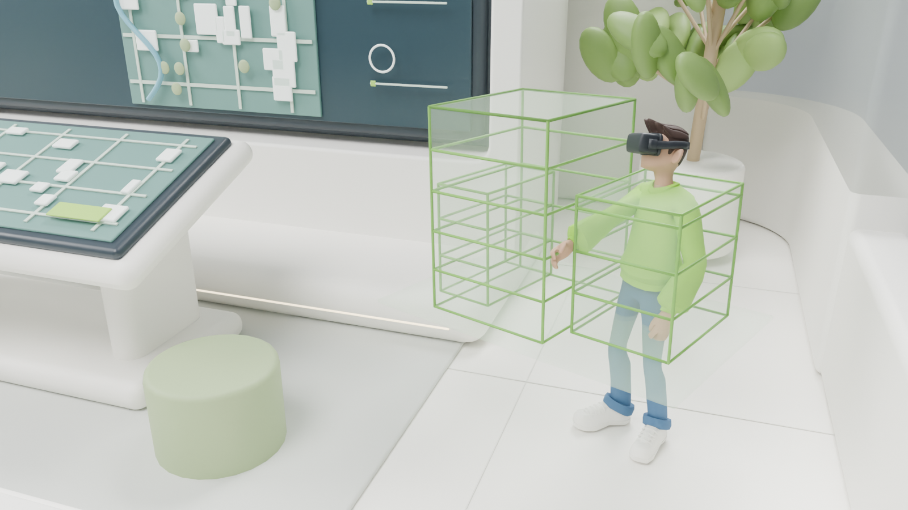

3D & architectural visualization
Make spaces and concepts visible before they’re built.

TOSOLINI PRODUCTIONS / CREATIVE TECHNOLOGY
Digital experiences.
Real-world connections.
We bring stories, spaces, and ideas to life through experiences people can explore.
Explore our expertise
01 INTERACTIVE DIGITAL SIGNAGE
Invite interaction.
Turn attention into participation. Touch experiences that make your story easy to explore—and hard to forget.
Showrooms · Briefing centers · Events
Bring your story to life02 REALITY CAPTURE / DIGITAL TWINS
Open up a place.
Make a physical space accessible from anywhere. Digital twins that help people explore, understand, and share your world.
Virtual tours · Spatial documentation
Capture your space03 SPATIAL COMPUTING
Step inside an idea.
Put people inside the possibility. Immersive experiences that make products, spaces, and complex ideas feel real.
Immersive demos · Spatial experiences
Explore what’s possibleADDITIONAL SERVICES
A few more ways we help turn a story into an experience.
Make spaces and concepts visible before they’re built.
Test a possibility. Shape the interaction. Find the way forward.
Bring clarity, character, and movement to your message.
CLIENTS & COLLABORATORS
ABOUT TOSOLINI
We’re a creative technology studio in Bellevue, Washington, connecting business storytelling with interactive and spatial experiences.
We bring curiosity to the possibilities and care to the details. From a first conversation to a working experience, the goal stays simple: help people understand, connect, and remember.
Meet us through your next ideaSTART A PROJECT